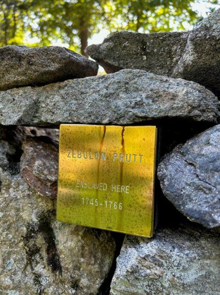
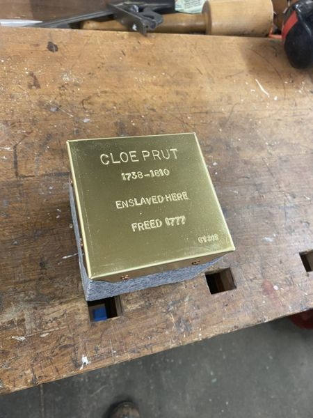
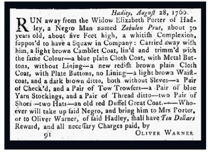
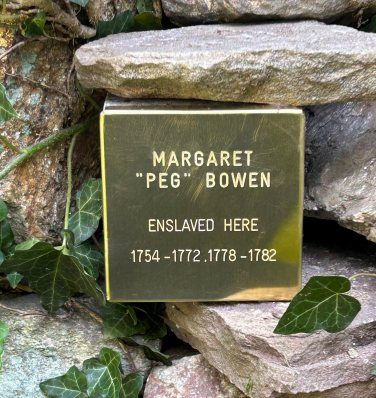

Exploring Kinship Ties
No One Was Enslaved Alone
Across 382 Witness Stones and Stopping Stones, this project traced 935 family and community ties among 812 people: 380 are remembered by a stone, and 432 are commemorated here by name. This page follows one family: Arthur and Joan Prut and their seven children, enslaved in Hadley, Massachusetts, and split apart when their enslaver died. Scroll to follow them on the map.
By Sulaiman Moukheiber and Max Hunt, Worcester Polytechnic Institute, with Historic New England. About the project · Explore the ties · Spreadsheet
Content note: this page quotes historical records as they were written, including the racist language of the time, and some records describe violence against enslaved people.
The big picture · Where it began
Slavery in New England
Slavery was part of life across colonial New England. In 1641 the Massachusetts Body of Liberties became the first legal code in British North America to allow it. Enslaved people worked in homes, workshops and shipyards and on farms, and merchants in ports such as Boston and Newport bought and sold enslaved Africans.
Each state ended slavery at a different time. Vermont's 1777 constitution outlawed it, and court cases ended it in Massachusetts in the early 1780s. Connecticut and Rhode Island passed gradual abolition laws in 1784, so some people stayed enslaved for decades after; Connecticut ended slavery completely only in 1848. New Hampshire did not formally abolish slavery until 1857.
On the map: when each New England state ended slavery.
Scroll down: who this project found ↓
The big picture · Everyone we found
812 people, 935 ties
812people found in the records935family and community ties380remembered by a stone432commemorated by nameEvery dot is a person. Purple dots are the 432 people commemorated here by name; the lines are the ties between people. Click any dot to read about that person. Every name is in the project spreadsheet below the map.
The map key doubles as switches: untick an item to hide it. People commemorated by name are placed at their town or beside someone they are tied to, not at an exact spot. 39 of them could not be placed on the map; they are in the spreadsheet.
Scroll down to see only the stones ↓
The big picture · Every stone
382 stones in 12 states
Witness Stones and Stopping Stones each remember a person who was enslaved, with a small brass marker set where they lived, worked or prayed.
246 of the 382 stones are in Connecticut. Every dot on the map is a stone: dark blue for Witness Stones, gold for Stopping Stones. Click a stone to read about the person and open its page.
The people commemorated by name are hidden here. Tick "Commemorated by name" in the map key to show them again.
31 stones do not have a mapped location yet. Missouri and Texas are off the edge of this map.
380 people are remembered by these 382 stones, because 2 people have two stones.
Scroll down ↓
The big picture · Why connect the stones
Kinship connects the stones
Each stone remembers one person. But people had parents, children, partners and friends, and slavery often tore those ties apart through sale or inheritance.
Kinship here means family ties and community ties: the people someone was related to, lived with or stood by, not only blood relatives.
On the map, the bright dots are the 238 stones whose person was family or community to someone else with a stone, and the lines join them: 281 ties in all.
This page follows the Prut family, ringed in orange on the map, to answer three questions: Who were the Pruts, how were they torn apart, and where are they remembered today?
How these ties were found is explained below the map.
Scroll to zoom in ↓
The story · Meet the family
The Prut Family of Hadley
Arthur and Joan Prut and their seven children were enslaved by Rev. Isaac Chauncey, the minister of Hadley. Below are the family members and the people they lived beside. Click a name to find them on the map.
9family members2of the 9 have a stone4people in their community2states with a family stone: CT, MAThe family
their seven children
Records spell the family name Prut, Prutt and Pratt. The stones say Zebulon Prutt and Cloe Prut; this page uses Prut for everyone else.
Their community
- enslaved with Zebulon at Forty Acres
- also enslaved at Forty Acres, likely close to Peg
- bought a house with Cloe in 1796
- lived with Cloe and Hagar
Scroll on for their story, in 8 parts ↓
The story · 1 of 8
A family of nine
Arthur and Joan Prut had seven children. Zebulon was born in 1731 and Cloe, the youngest, about 1738. The others were Caesar, Ishmael, Abner, George and Elenor.
Kinship linkZebulon (MA 1A) and Cloe (CT 242) were brother and sister: two stones, one family.
The story · 2 of 8
A family split apart
When Chauncey died, the family was divided among his children. Zebulon, age 14, was sold to Moses Porter of Hadley, Massachusetts. Cloe, about seven years old, was "given" to Chauncey's daughter Katherine, who married Rev. Daniel Russell and moved to Rocky Hill, Connecticut.
The story · 3 of 8
Remembered by two programs
Zebulon is remembered by a Stopping Stone (MA 1A) at the Porter-Phelps-Huntington Museum in Hadley. Cloe is remembered by a Witness Stone (CT 242) in Rocky Hill. On the map, gold dots are Stopping Stones and dark blue dots are Witness Stones.
Kinship linkBecause Zebulon and Cloe were siblings, one family links a Stopping Stone and a Witness Stone.

MA 1APhoto: Historic New England (MA 1A stone page) 
CT 242Photo: Historic New England (CT 242 stone page) The story · 4 of 8
Zebulon runs away
In August 1766 Zebulon ran away from his enslaver, the widow Elizabeth Porter of Hadley. A notice in the Connecticut Courant, a Hartford newspaper, offered ten dollars for his return and listed every piece of clothing he took. It also says he was thought to have an Indigenous woman with him. Massachusetts ended slavery in the 1780s, so Zebulon was free by the time he died on December 2, 1802.

The notice, dated Hadley, August 28, 1766: it describes Zebulon, lists the clothes he took, and offers "Ten Dollars Reward" to whoever brings him back to Mrs. Porter.Connecticut Courant, 1766. Image: Historic New England (MA 1A stone page) The story · 5 of 8
Cloe makes a home of her own
Katherine Russell's will gave Cloe her freedom, "books she calls her own," and things to help her earn a living. In 1796 Cloe bought a house in Wethersfield with Hagar Dorus, who had been enslaved by Silas Deane. Pomp Dorus lived with them. Cloe died in 1810; her death record gives her age as 70.
Kinship linkCloe, Hagar Dorus and Pomp Dorus shared a home: community ties, not blood ties.

The 1796 deed: James Clark received "of Cloe Pratt and Hagar Dorces of said Wethersfield, twenty five pounds" for "one certain dwelling house."Wethersfield, Connecticut, Land Records, vol. 20, p. 490. Image: Silas Deane Online The story · 6 of 8
Commemorated together in Rocky Hill
Cloe is commemorated together with 22 other people enslaved in Rocky Hill between 1712 and 1808, found in the town's church and other records. Only Cloe has a stone; on this page the others are commemorated by name. Some had ties of their own: Dick and Rose married in 1768, and Newport and another Rose in 1782. Caesar Freeman, freed in 1780 to serve in the Revolutionary War, married Lemon Harrison in 1810.
Kinship linkCloe shared a town and a church with these 22 people: a community tie. The records found so far do not name a closer tie between her and any of them.
Commemorated here by name
Hannah, Quam, Jinny Palmer, Andrew Warner, Ana, Rose (wife of Dick), Dick, Caesar Freeman, Woman (name not recorded), Windsor, Lemon Harrison, Frank, Newport (Tovo), Rose (wife of Newport), Lattrice, Douglas, Lucy, two infants (names not recorded), Child (name not recorded), Rose (died 1800), Phebo.
The story · 7 of 8
Side by side at Forty Acres
At Forty Acres, the farm that is now the Porter-Phelps-Huntington Museum, Zebulon was enslaved alongside Peg (Margaret) Bowen. Their stones stand together there today.
Kinship linkZebulon (MA 1A) and Peg (MA 3A) were enslaved in the same household: a community tie.

MA 3APhoto: Historic New England (MA 3A stone page) The story · 8 of 8
One woman, two stones
In 1772 Peg Bowen was sold to Bennington, Vermont. By 1778 she was back at Forty Acres. Two stones remember her: MA 3A in Hadley and VT 4 in Bennington. Cesar Phelps (MA 2A), also enslaved at Forty Acres, was said to lose heart when "the enslaved woman Peg" was sold away in 1772. That was very likely Peg Bowen.
Kinship linkMA 3A and VT 4 remember the same woman. Cesar Phelps (MA 2A) was likely close to her: both were enslaved at Forty Acres.
Remembering · What the story shows
What the Prut family shows
- Who they were
- A family of nine enslaved in Hadley, and a community that included Peg Bowen, Cesar Phelps, and Hagar and Pomp Dorus.
- How they were torn apart
- Their enslaver's heirs divided them: Zebulon was sold in Hadley, and Cloe was taken to Connecticut.
- Where they are remembered
- By a Stopping Stone in Hadley for Zebulon and a Witness Stone in Rocky Hill for Cloe, where 22 other enslaved people are commemorated by name alongside her.
On the map: the family's stones, joined by their ties, among every other stone.
Remembering · What comes next
Who could get a stone next
Arthur, Joan and five of their children are commemorated here by name. They could also be candidates for new stones in Hadley, where the family was enslaved. The Porter-Phelps-Huntington Museum, which already remembers Zebulon and Peg, is the partner closest to their story. A stone is one way to remember them; learning their names, teaching their story and adding to the research are others.
Some questions are still open. They are listed under What we do not know yet, below the map.

The project spreadsheet
Everything on the map comes from this spreadsheet. It lists the 812 people this page commemorates (380 remembered by a stone and 432 commemorated by name), and 32 descendants and other people named in the same records, who are listed but not commemorated. It also lists every tie, each with the words of the source it comes from. Search it here, or download it.
Content note: this page quotes historical records as they were written, including the racist language of the time, and some records describe violence against enslaved people.
Download the spreadsheet (Excel)| Name | Stone | Town |
|---|
| Person | Tie | Person | How sure |
|---|
How these ties were found
WPI students working with Historic New England started from the stone pages in the "Those We Remember" list and the research Historic New England shared: 61 Witness Stones project sheets written by students and 1,766 research files sorted by state and town, such as census extracts, church records, manumission records and runaway notices. They added outside records such as vital, probate and land records. When a name search found nothing, they tried other spellings and followed the person's household and enslaver.
A script was made to comb through those documents: it suggested each tie between two people, together with the exact words it was taken from. Team members checked about 150 of those suggestions against the original documents: 136 were confirmed or partly confirmed and 18 were rejected. The other ties have not yet been checked by a person, but every tie on this page keeps the words of the source it came from and a label for how sure it is, so readers can check it themselves. A source can be a historical record or a modern research document, such as a Witness Stones project sheet or a Life File; quotation marks show where the words are quoted from a record. A quote the script could not match word for word gets the closest reading.
For each tie they recorded the two people, how they were related, the exact source, and how sure the record is. Where the evidence is unclear, the tie is labelled that way rather than shown as certain:
- Shown in records: a record names the tie, such as a birth record or a deed.
- Likely: the records strongly suggest the tie but do not state it.
- Possible: a lead that still needs checking.
Across all 382 stones, that came to 935 ties among 812 people, 432 of whom are commemorated here by name. 697 are family ties and 238 are community ties, such as living in the same household. 735 are shown in records, 133 are likely and 67 are possible. This page tells the Prut family's story from those ties.
The records also name 32 other people: descendants born after slavery ended, and members of enslaving families and others who appear in the same records. They are listed in the spreadsheet because they are part of the story, but they are not commemorated or counted here.
What we do not know yet
- Where Caesar, Ishmael, Abner, George and Elenor went after the family was split up. Deerfield's "African Americans in the Record" has pages for several of them, and Caesar may be connected to the 1828 Kellogg House in Amherst.
- Whether "the enslaved woman Peg" sold in 1772 is Peg Bowen. The dates on her two stones match.
- Whether "Prut," a Revolutionary War veteran remembered in West Hartford (CT 11), descends from this family. The Cloe Prut project sheet lists him only as a "possible later generation."
Sources
- Historic New England, Stopping Stones: "MA1A – Zebulon Prutt," stoppingstones.org/stone/ma1a-zebulon-prutt/
- Historic New England, Stopping Stones: "CT242 – Cloe Prut," stoppingstones.org/stone/6530/
- Historic New England, Stopping Stones: "MA3A – Margaret Bowen," stoppingstones.org/stone/ma3a-margaret-bowen/
- Historic New England, Stopping Stones: "MA2A – Cesar Phelps," stoppingstones.org/stone/ma2a-cesar-phelps/
- Historic New England, Stopping Stones: "VT04 – Margaret “Peg” Bowen," stoppingstones.org/stone/5576/
- Stopping Stones, "Healing Through Remembrance" (home page) and "Witness Stones Project for Schools," stoppingstones.org/ and stoppingstones.org/witness-stones-project-for-schools/
- WPI IQP team, "Background" (sections 2.1 to 2.10) and "Methodology" chapters, Exploring Kinship Ties among Enslaved Peoples in New England, 2026.
- Deed, James Clark to Cloe Pratt and Hagar Dorces, April 26, 1796. Wethersfield, Connecticut, Land Records (1790–1798), vol. 20, p. 490. Image from Silas Deane Online, silasdeaneonline.org/
- Witness Stones Project, Cloe Prut project sheet (Rocky Hill).
- Edward Chiucarello, "The Enslaved in Rocky Hill, 1712–1808" (draft, February 6, 2025), citing the Stepney Parish / Rocky Hill Congregational Church records, the Wethersfield Historical Society "People of Color" database and the Rocky Hill Historical Society archives.
- Historic New England staff, meetings with the WPI project team, October 14 and November 5, 2026.
About this project
This page was made by Sulaiman Moukheiber and Max Hunt, students at Worcester Polytechnic Institute (WPI), for their Interactive Qualifying Project, "Exploring Kinship Ties among Enslaved Peoples in New England," advised by John Galante. The team worked with Historic New England's Stopping Stones program to connect the people remembered by Witness Stones and Stopping Stones through their family and community ties, and to show that no one was enslaved alone.
The project report, with its background, methods and findings, will be published through the WPI library.
How to cite this page
Moukheiber, Sulaiman, and Max Hunt. "No One Was Enslaved Alone: Kinship Ties among Enslaved Peoples in New England." Interactive Qualifying Project, Worcester Polytechnic Institute, in partnership with Historic New England, 2026. https://sul24mib.github.io/IQP-Kingship-T/ Last updated November 23, 2026.
Last updated November 23, 2026.
Draft prepared by the WPI IQP team (Exploring Kinship Ties among Enslaved Peoples in New England) for Historic New England. For review.